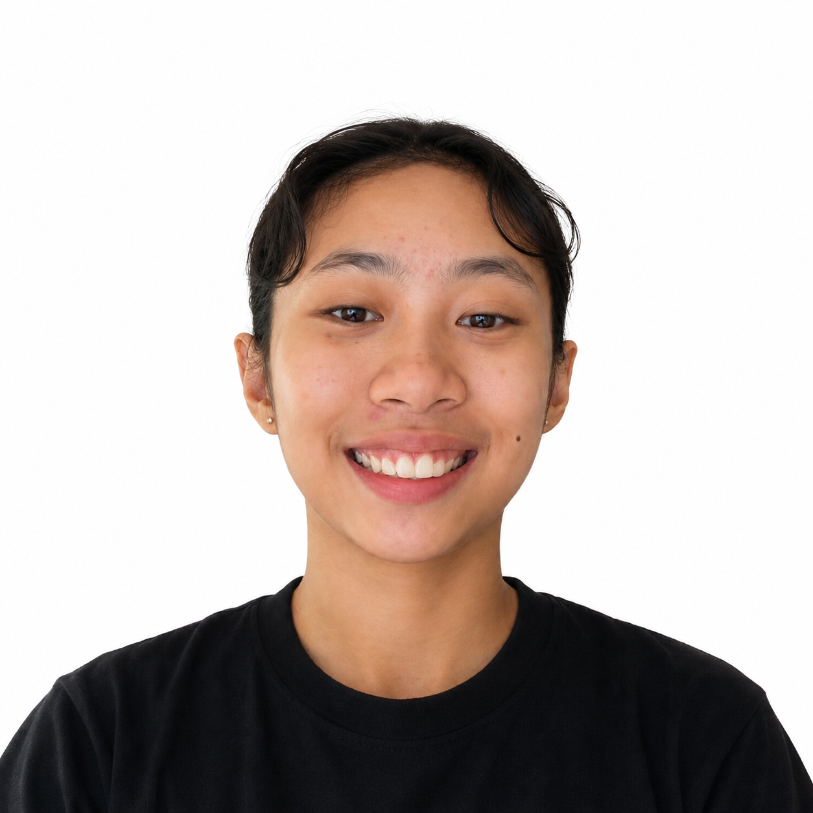

Web foundations
Creating structured, responsive pages with a strong focus on clarity and presentation.
HTMLCSSResponsive designBasic JavaScript
BSIT student · KCC
Hi, I’m Kyla Angelica T. Pilar — a Bachelor of Science in Information Technology student at Kabankalan Catholic College who enjoys turning ideas into clear, useful web pages.
Curious mind · Team player · Volleyball enthusiast

Kabankalan
Catholic College
A little about my direction
I’m developing the technical and personal skills to create digital experiences that are simple to use, thoughtful in design, and made to help people.
02 / about me
I am currently pursuing a Bachelor of Science in Information Technology at Kabankalan Catholic College. I enjoy learning how technology works and practicing how to turn a blank page into a well-organized website.
Outside the classroom, sports keep me active and grounded. Volleyball has taught me the value of teamwork, discipline, and showing up for every play qualities I also bring to my studies and creative work.
Let’s start a conversation03 / capabilities
.
Creating structured, responsive pages with a strong focus on clarity and presentation.
Organizing files, using productivity tools, and learning version control step by step.
Showing up with focus, responsibility, and a willingness to learn from every experience.
04 / recognitions
A reminder that consistency and commitment make a difference.
Celebrating effort, teamwork, and the joy of playing the sport I love.
05 / beyond the screen
The things I enjoy outside of class keep me balanced, creative, and connected.
Energy, teamwork, and play.
Order creates room to think.
Recharge, then show up.
Let’s connect
I’m open to student collaborations, learning opportunities, and conversations about technology and design.
For academic and professional connections, reach me through any of the links below.